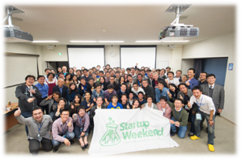

<div class="span11 hentry clear" >
  <h2>活動報告</h2>
  <div class="hentry">

<!-- 開催イベント単位に記述する ----------------------------------
　イベント作成時は
　<h3>タイトル</h3> と、<h4>ちょっとした見出し</h4>
　その下に説明文を<p>　～～～　</p> で挟んで記載する
========================================================================== -->
<!--
    <div class="section">
      <h3 id="1">開催案内</h3><br />
    </div>
-->
<!-- 開催案内divのおわり -->


<!-- 開催報告 ここから（ニュースのリンクでいい）
 ================================================== -->

   <div class="section">
     <!-- 開催報告divここから -->
     <!--<h3 id="2">開催報告</h3><br />-->

     <ul>
     <li>Startup Weekend Tokyo Tech Vol.5 を開催しました（2016.11.4-6）</li>

     <li><a href="http://www.titech.ac.jp/news/2016/036703.html" target="_blank">第3回CBECシンポジウムを開催しました。（東工大ニュース）</a>（2016.10.31）</li>

     <li><a href="http://www.titech.ac.jp/news/2016/036566.html" target="_blank">Startup Weekend Tokyo Tech Vol.4 開催報告（東工大ニュース）（2016.6.3-5）</a></li>

     <li>ホームカミングディで「東工大生のためのデザイン思考基礎」の公開授業を開催しました。（2016.5.21）</li>

     <li><a target="_blank" href="http://www.titech.ac.jp/news/2015/032818.html">Startup Weekend Tokyo Tech Vol.3 開催報告（東工大ニュース）（2015.10.30-11.1）</a></li>

     <li><a target="_blank" href="pdf/20150426_SWTT.pdf">Startup Weekend Tokyo Tech Vol.2 開催報告（2015.4.24-6）（PDF 404KBB）</a></li>

     <li><a target="_blank" href="pdf/20141103_SWTT.pdf">Startup Weekend Tokyo Tech Vol.1 開催報告（2014.11.1-3）（PDF 23.5MB）</a></li>

     <li><a target="_blank" href="pdf/1stSympoReport.pdf">CBEC第1回シンポジウムレポート（2014.11.1）（PDF 1.3MB）</a></li>
     <!--
     <br />
     
     <br />
     -->
     </ul>
   </div> <!-- 開催報告divの終わり -->

  </div> <!-- hentry divの終わり -->
</div> <!-- span11 divの終わり -->


<!-- sidebar -->
<div class="span4">
<div id="sidebar" class="heightLine">
  <div class="submenu ">
    <h2 class="subtitle"><i class="fa fa-caret-down" style="color:white;font-size:12px;"></i>&nbsp;<a href="/report/">CBECイベント</a></h2><br /> </div>
  <!--<div class="menubg menu-lage" style="padding-left:0px;">&nbsp;<a href="#1">開催案内</a></div>
  <div class="menubg menu-lage" style="padding-left:0px;">&nbsp;<a href="#2">開催報告</a></div>-->
</div>
</div> <!-- span4 divの終わり -->
